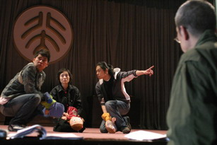

主创
导演：林兆华
副导演：Frede Gulbrandsen（挪威）、王晓鑫
制作：林兆华戏剧工作室
演出计划
2006 年 4 月 27 日–5 月 6 日，19:30；人艺实验剧场。
历史票务
票价：50（学生）、100、180（VIP）。原站另列订票电话与学生票预订电话；这些号码仅作为历史档案保留。

原站图片说明：排练场；摄影：杨春雁。
创作背景
旧站介绍称，该剧从易卜生《玩偶之家》中三个孩子的角度重新讲述娜拉出走之后的故事，并记录挪威剧作家 Jesper Halle 的创作背景以及中挪合作信息。
页面同时保存了林兆华、Frede Gulbrandsen 等主创的访谈式文字。新版将其视为 2006 年宣传材料，而非对人物今天观点的概括。